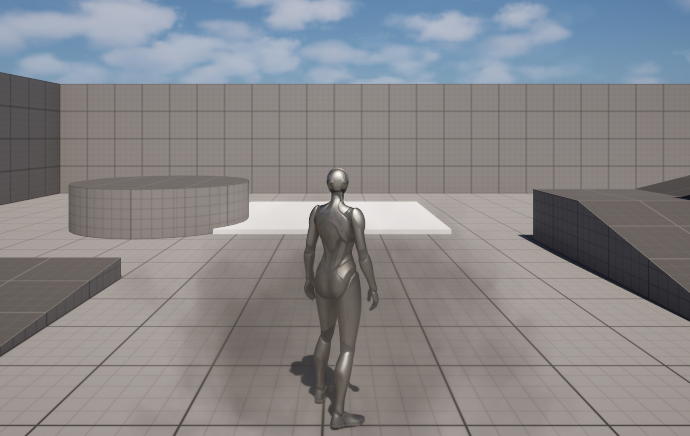
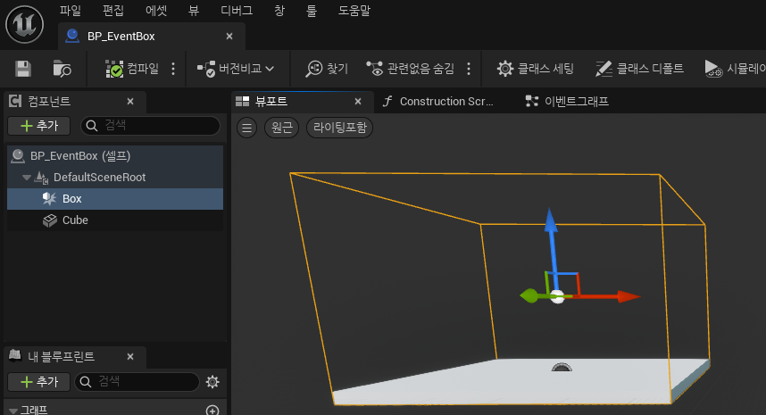
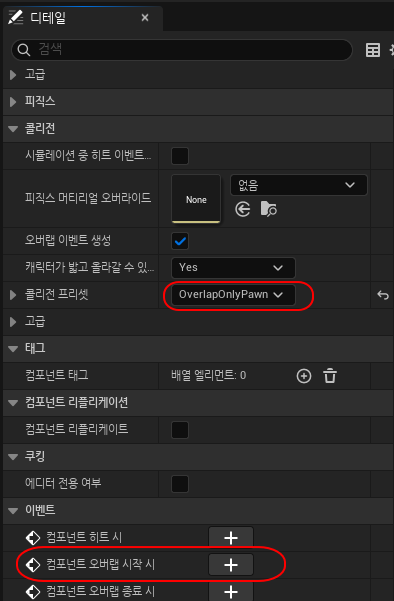
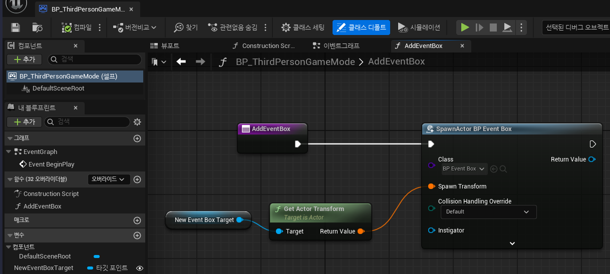
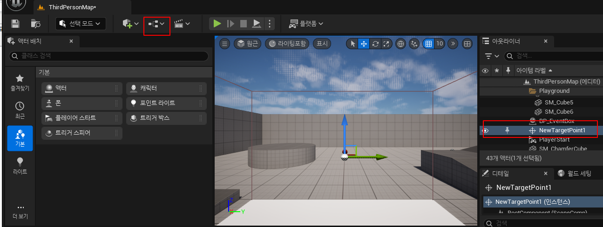
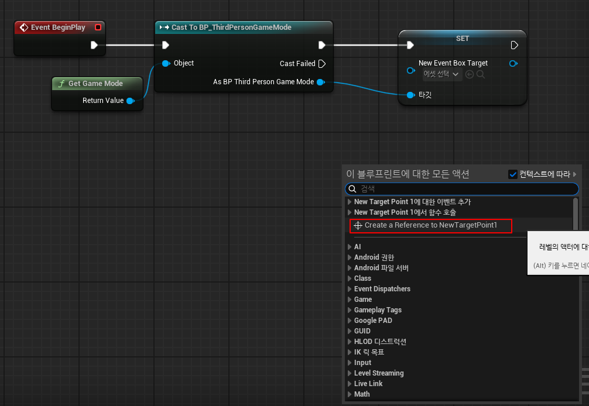
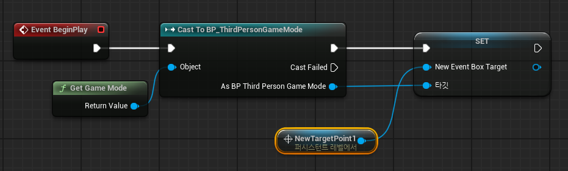
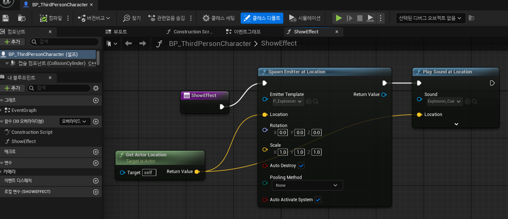
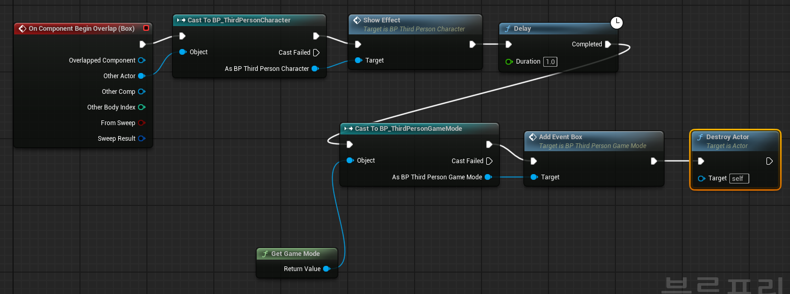

| 블루프린트에 박스를 추가하여 trigger로 사용하는 방법에 대해 알아 보겠습니다. 흰색 큐브가 이벤트 박스에 오버랩 되면 새로운 흰색 큐브가 생성됩니다. 오버랩 될때, 이펙트와 사운드 연출효과가 있습니다.  BP_EventBox에서 작업1. 오른쪽 마우스를 클릭해서 블루 프린트 > 블루 프린트 클래스 > 액터를 생성여기서 파일 이름은 BP_EventBox입니다. 2. Cube를 추가 합니다. 스케일을 5, 5, 0.2로 지정합니다. 3. Box를 추가 합니다. 스케일을 7.82, 7.82, 5로 지정합니다. 위치는 0, 0, 150으로 지정합니다.  4. Box 컴포넌트를 선택하고 콜리전 / 콜리전 프리셋에서 OverlapOnlyPawn을 선택합니다. 콜리전 프리셋을 OverlapOnlyPawn으로 지정하면 캐릭터만 트리거로 체크 하게 됩니다.  5. "컴포넌트 오버랩 시작시"를 클릭하여 이벤트를 추가합니다. BP_ThirdPersionGameMode에서 BP_EventBox를 스폰 합니다.6. 스폰할 트랜스폼을 저장하기 위해 "타깃 포인트" 타입의 변수 NewEventBoxTarget을 추가7. AddEventBox 함수를 추가 8. "BP_EventBox"를 스폰하기 위해 Game > Spawn Actor from Class 노드 추가 9. Spawn Actor from Class 노드에서 Class를 "BP_EventBox"로 지정 10. Spawn Actor from Class 노드에서 Spawn Transform을 NewEventBoxTarget의 트랜스폼으로 지정  게임모드의 NewEventBoxTarget 변수 값을 레벨 블루프린트에서 지정11. NewTargetPoint1을 지정후에 레벨블루프린트 열기 12. Event BeginPlay에서 게임모드의 변수를 설정 할수 있도록 노드를 다음과 같이 구성 합니다. 13. 맵에 배치한 NewTargetPoint1 오브젝트를 참조하기 위해 "Create a Reference to NewTargetPoint1" 노드를 생성 합니다.  14. NewTargetPoint1로 게임모드의 NewEventBoxTarget을 설정 합니다.  15. 이벤트박스에 오버랩시 이펙트와 사운드를 연출하기 위해 BP_ThirdPersionCharacter에 ShowEffect 함수를 만들고 이펙트와 사운드를 추가 합니다.  BP_EventBox에서 캐릭터가 오버랩 되었을때 처리를 하겠습니다.16. 오버랩 되면 BP_ThirdPersonCharacter의 ShowEffect로 이펙트와 사운드 처리로 연출 효과를 줍니다. 17. 1초 동안 Delay 18. GameMode로 AddEventBox 실행하여 박스 추가 19. BP_EventBox 제거  |